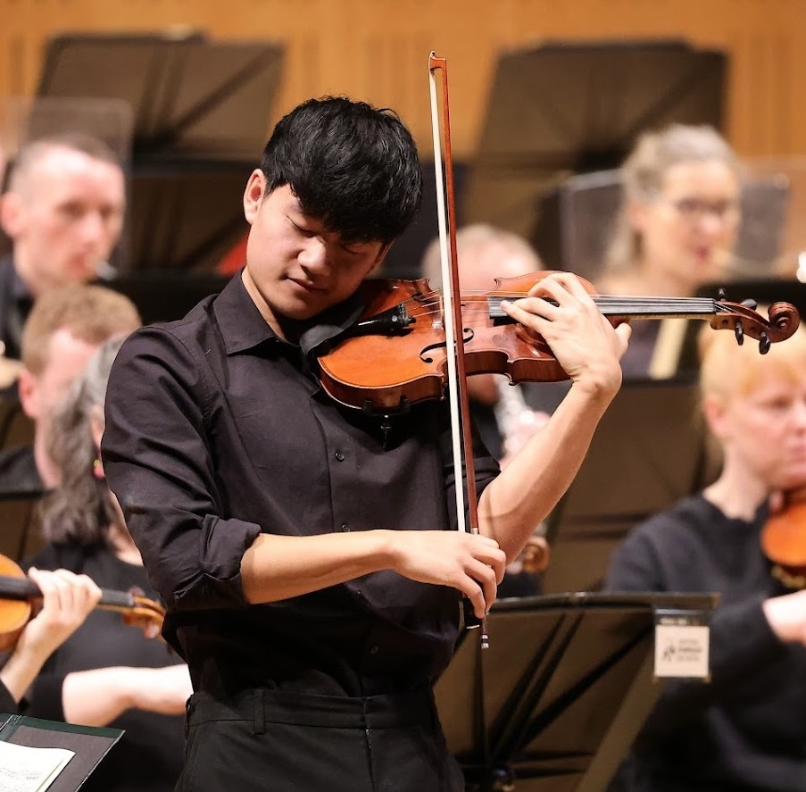

Maths
Higher Level Leaving Cert maths — algebra, calculus, geometry, and exam strategy.
H1UCD Medicine student (Wesley College alumni)
Higher Level Leaving Cert grinds and violin tuition from Kian Lee, incoming UCD Medicine student and Wesley College alumni. Maximum 625 points in 2026. Korean is my mother tongue — lessons and enquiries in English or Korean (한국어 수업·상담 가능).

What I teach
Six Higher Level H1 subjects, plus violin. Clear explanations, exam technique, and structured practice — in English or Korean.
Higher Level Leaving Cert maths — algebra, calculus, geometry, and exam strategy.
H1Mechanics, vectors, and problem-solving for Higher Level Applied Maths.
H1Concepts, derivations, and past-paper practice for Higher Level Physics.
H1Organic, inorganic, and physical chemistry with clear step-by-step methods.
H1Higher Level French — oral, comprehension, written production, and exam technique.
H1Leaving Cert Music — listening, composition, and set works with structured revision.
H1Technique, repertoire, and performance preparation — see credentials below.
Mia CooperWhy study with me
I sat the Leaving Certificate in 2026 at Wesley College and achieved the maximum score of 625 points. I am an incoming student at UCD Medicine. I know what examiners look for, how to manage time under pressure, and how to turn weak topics into strengths.
Korean is my mother tongue, so families can enquire and take lessons in Korean as well as English. 한국어가 모국어라 한글로 수업과 상담이 가능합니다.
Lessons are one-to-one, so we focus entirely on what you need: catching up, pushing for a H1, or building confidence before mocks and the final exams.
Violin, voice & orchestra
Alongside academic success, I am a singer-songwriter and violinist. I have led some of Ireland’s top youth orchestras and study violin with one of the country’s foremost performers. I have also taken a violin masterclass with Maxim Vengerov.
Hear original music and performances on Instagram and TikTok.
Violin masterclass with world-renowned violinist Maxim Vengerov.
Leader of the National Youth Orchestra of Ireland.
Co-leader of the Ulster Youth Orchestra.
Mia Cooper — Leader of the RTÉ Concert Orchestra.
Get started
Send a WhatsApp message or email with the subject, year, and what you’d like help with — in English or Korean. I’ll reply with availability and rates.